plot(<expr>)plot 演算子は、関数をプロットするのに使えます。この演算子には、一つの式 <expr> を与えます。この式は実行変数 # を含まなくてはならず、実数の入力値 # に対して、ひとつの実数か2次元ベクトルを計算します。一つの実数の場合には、 plot 演算子は単純な関数のグラフを描きます。ベクトルの場合には、媒介変数形のグラフを描きます。座標系は、幾何の表示画面の座標系に依存します。 # の代わりに他の実行変数を使うことができます。自由変数が一つだけあればそれを実行変数と見なします。複数の自由変数がある場合は、 x, y, t, z の順に探して実行変数とします。plot 演算子の最も簡単な使用法は、直接、関数の式を書くことです。 plot(sin(#)) と書けば、すぐに sin(x) のグラフを描きます。これはplot(sin(x))と書いても同じです。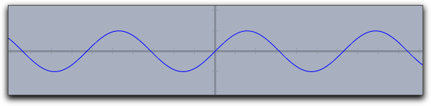 |
plot 演算子でそのグラフを描くこともできます。 次の例をごらんください。f(x):=1/(x^2+1)*sin(4*x); plot(f(x));
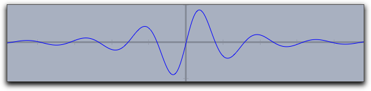 |
<expr> に２次元ベクトルを与えた場合は、 plot 演算子は自動的に媒介変数表示のグラフを描きます。このとき、入力値の範囲は初期値として1から100までの数がとられます。しかし、これらの初期値は修飾子で簡単に変えることができます。 plot([sin(t),cos(t)]*t) の結果は次のようになります。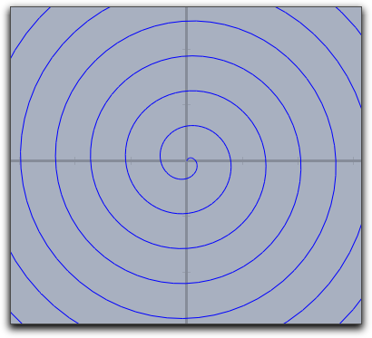 |
plot では多くの修飾子が使えます。そのいくつかは詳しく解説する必要があるでしょう。それらは、曲線の外観、プロットの範囲、画面上の位置、関数の極大値、極小値、零点、変曲点の表示を変更するのに使われます。 利用できる修飾子の概要は次の表にあります。いくつかの修飾子は、引数の形式が異なれば異なる効果をもたらします。| 修飾子: | 引数の型: | 効果 |
| 外観の表現: | ||
| color | [<実数1>,<実数2>,<実数3>] | 色を設定 |
| size | <実数> | 線の幅を設定 |
| alpha | <実数> | 不透明度を設定 |
| connect | <実数> | 関数値の飛んでいるところをつなぐ |
| 繰り返しの制御: | ||
| start | <実数> | 描き始めの値を設定 |
| stop | <実数> | 描き終わりの値を設定 |
| steps | <実数> | プロットする点の間隔 (媒介変数のみ) |
| pxlres | <実数> | 曲線をプロットする解像度 (実数関数のみ) |
| 特別な点: | ||
| extrema | <ブール値> | すべての極値をマークする |
| extrema | [<実数1>,<実数2>,<実数3>] | すべての極値を指定した色でマークする |
| minima | <ブール値> | すべての極小値をマークする |
| minima | [<実数1>,<実数2>,<実数3>] | すべての極小値を指定した色でマークする |
| maxima | <ブール値> | すべての極大値をマークする |
| maxima | [<実数1>,<実数2>,<実数3>] | すべての極大値を指定した色でマークする |
| zeros | <ブール値> | すべての零点をマークする |
| zeros | [<実数1>,<実数2>,<実数3>] | すべての零点を指定した色でマークする |
| inflections | <ブール値> | すべての変曲点をマークする |
| inflections | [<実数1>,<実数2>,<実数3>] | すべての変曲点を指定した色でマークする |
| 破線: | ||
| dashing | <実数> | 破線パターンの幅 (初期値 5) |
| dashtype | <整数> | 特定の破線タイプ ( 値は0から4まで) |
| dashpattern | <リスト> | 個々の破線パターンを指定する |
plot(f(#),start->A.x,stop->B.x) とすれば、シンデレラで描いた２つの点の x-座標を使って、描く範囲をコントロールできます。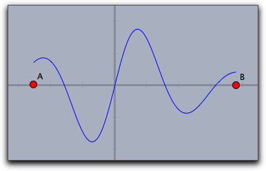 |
plot(...) 関数は、特異点の近くで自動的に解像度を高めます。次の例は plot(sin(1/#)*#) の結果を示しますが、原点付近での解像度が高くなっているのを観察してください。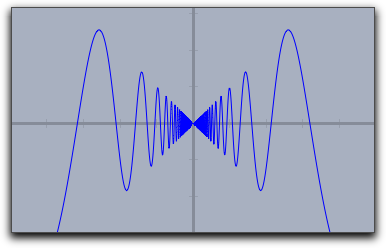 |
connect->true という修飾子をつけます。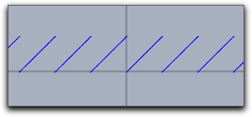 | 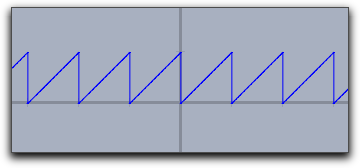 | |
plot(x-floor(x)) | plot(x-floor(x),connect->true)
| |
pxlres 修飾子でコントロールできます。 pxlres->1 は、1ピクセルあたり1点をプロットします。しかし、上記のようにこれらの調整は自動的に行ないますので、この修飾子の使い方については、このあとの、colorplot()の説明をごらん下さい。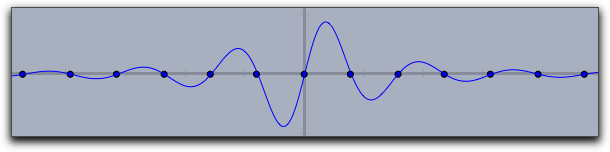 |
zeros->true |
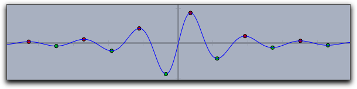 |
extrema->true |
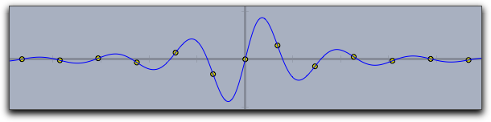 |
inflections->true |
dashing, dashtype および dashpattern 修飾子でコントロールできます。dashtype : ０から４までの数であらかじめ定義された破線パターンを指定します。０は破線ではなくつながった線になります。
dashing : 破線の長さを実数で指定します。 dashing->5 が標準的な長さです。
dashpattern : リストを用いて破線の長さを指定します。
plot(sin(x),dashpattern->[0,3,7,3],size->2,dashing->5) で描いたものです。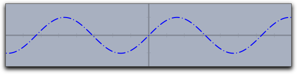 |
color と alpha は実行変数と連動させることができます。関数プロットの色と透明度は、関数値によって変化させられます。次の例はplot(sin(x),color->hue(x/(2*pi)),size->3)
hue を使っています。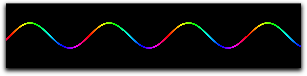 |
plot(<expr>,<var>)plot(<expr>) と同じですが、実行変数を指定します。fillplot(<expr>)fillplot 関数によって実現できます。plot 関数と同様な引数（実行変数など）を使います。最も簡単な使い方では、x軸をはさんだ部分をハイライトします。この関数ではグラフそのものは描きません。グラフも描きたい場合はplot(...) 関数と併用します。次のコードにより、図のような結果が得られます。f(x):=1/(x^2+1)*sin(4*x); fillplot(f(x)); plot(f(x));
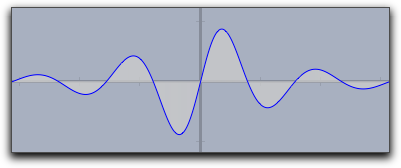 |
fillplot(...) における特異点の処理は、 plot(...) 関数ほど精密ではありません。そのため、 plot での修飾子とは使い分ける必要があります。| 修飾子: | 引数の型: | 効果 |
| 表現: | ||
| color | [<実数1>,<実数2>,<実数3>] | 色の設定 |
| pluscolor | [<実数1>,<実数2>,<実数3>] | 関数値が正のときの色 |
| minuscolor | [<実数1>,<実数2>,<実数3>] | 関数値が負のときの色 |
| alpha | <実数l> | 透明度 |
| 定義域の指定: | ||
| start | <実数> | 定義域の左端 |
| stop | <実数> | 定義域の右端 |
| グラフ: | ||
| graph | <ブール値> | 関数のグラフも描く |
| graph | [<実数1>,<実数2>,<実数3>] | 特定の色で関数のグラフを描く |
| size | <実数l> | 関数のグラフの太さ |
color と alpha 修飾子は plot と同様に色と透明度をコントロールします。次の図はそのいくつかの例を示します。: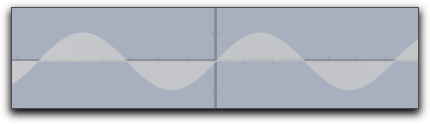 |
fillplot(sin(x)) |
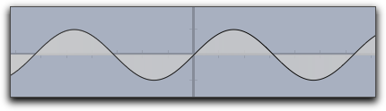 |
fillplot(sin(x),graph->true) |
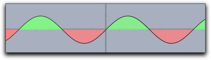 |
fillplot(sin(x),graph->true,pluscolor->(.5,1,.5),minuscolor->(1,.5,.5)) |
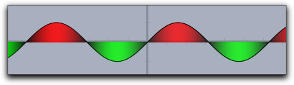 |
fillplot(sin(x),graph->true,color->(sin(x),-sin(x),0)) |
fillplot(<expr1>,<expr2>)fillplot(...) と同様ですが、2つの関数のグラフではさまれた部分をハイライトします。次の図はその例です。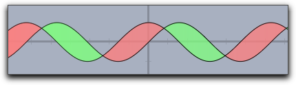 |
fillplot(sin(x),cos(x),graph->true,pluscolor->(.5,1,.5),minuscolor->(1,.5,.5))
fillplot(...) と同様の修飾子を用います。colorplot(<expr>,<vec>,<vec>)colorplot 演算子は、平面関数(planar function)の視覚化を可能にします。関数によって長方形の各々の点に、カラーコードを割り当てます。ここでも <expr> の関数の中で、実行変数 # が使われます。しかし、こんどはこの変数は平面上の点であることを銘記してください。 <expr> の戻り値は、実数か(その場合は灰色です)、３つの実数のベクトル(RGB)です。どちらの場合も、0から1の間の実数です。２番目と３番目の引数は、描画領域の左下と右上の位置を決定します。colorplot 演算子の第１の引数は、実行変数 # から計算される色のベクトルです。赤はＡからの同心円状の波、緑は0、青はＢからの同心円状の波です。最後に、ＣとＤは長方形の２つの頂点です。f(A,B):=((1+sin(2*dist(A,B)))/2); colorplot( (f(A,#),0,f(B,#)), C,D )
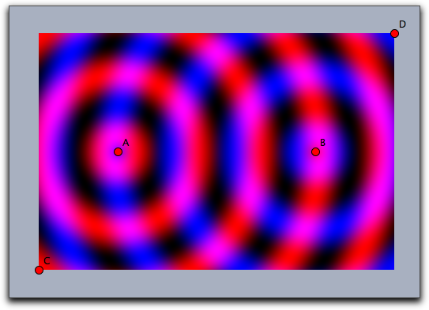 |
# を colorplot の実行変数として使うのがよいでしょう。しかし、別の変数を用いることもできます。どんな変数が実行変数として使えるかは、次の順序で考えてください。<expr> の中で１つだけの自由変数が使われている場合、その変数が実行変数として解釈されます。２次元ベクトルの場合もあります。
<expr> が # を含む場合、 # が実行変数とされます。
<expr> が x と yを自由変数として含む場合、 ベクトル (x,y) として扱われます。
(x,y)が用いられます。
p と複素数 z が実行変数としてチェックされます。
colorplot((sin(2*x),sin(2*y),0),A,B)
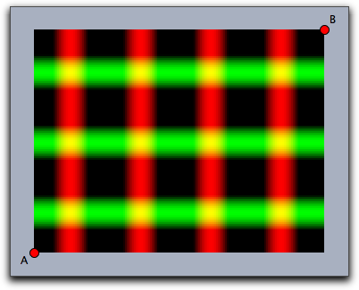 |
colorplot 演算子では3つの修飾子が扱えます。 pxlres は、色をプロットする四角形のピクセルの大きさを決定する整数です。上の図では pxlres->2 の場合で、これが初期値です。 pxlres を２か１にすると素晴らしい絵ができます。 しかしながら、四角形の中のピクセルごとに、 colorplot が計算されることに注意してください。 pxlres が１次関数的に減らされても計算は２次関数的に増加します。したがって、効率を上げるためにこの修飾子を調整するとよいでしょう。次の図は pxlres->8 とした場合です。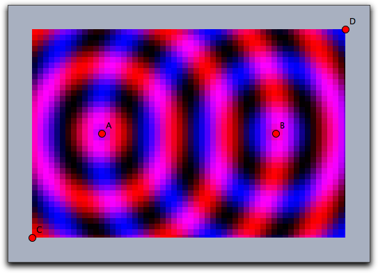 |
startresがあります。たとえば、 startres->16 と pxlres->1 を使うとインタラクティブな動きをします。十分な時間があれば最もよい解像度になるように再計算をします。colorplot 演算子では、透明度をコントロールする alpha 修飾子が使えます。 この修飾子は、実行変数をパラメータに用いることもできます。f(A,B):=((1+sin(2*dist(A,B)))/2); colorplot( (f(A,#),0,f(B,#)), C,D, pxlres->2, alpha->-abs(#)+5 )
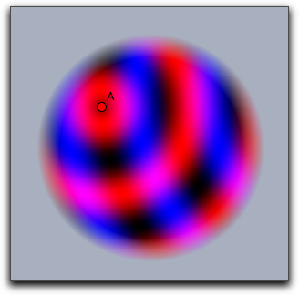 |
drawfield(<expr>)drawfield 演算子は、式 <expr> で与えられるベクトル場を描画するのに用います。この式は実行変数 # を含んだ２次元ベクトルである必要があります。その結果も２次元ベクトルです。式を drawfield 演算子に適用すると、対応するベクトル場を描きます。ベクトル場は動的です。たとえば、画面上でマウスをドラッグすると絵が動きます。したがって、 drawfield 演算子を Draw スロットでなく "timer tick" スロットに入れるのが有効です。すると、アニメーションコントローラが表示されます。 アニメーションを走らせると、ベクトル場が自動的に動きます。実行変数の考え方は colorplot(...) と同様です。特に、自由変数 x と y を２次元ベクトル (x,y)として使うことができます。f(x,y)=(y,sin(x))によって定義されるベクトル場を考えます。CindyScriptでの定義のしかたと drawfield 演算子の使い方は次の通りです。f(v):=[v.y,sin(v.x)]; drawfield(f(#));
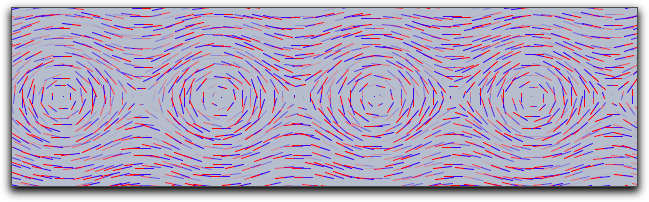 |
drawfield((y,sin(x)));
f(v):=[v.y,sin(v.x)]; drawfield(f(#),stream->true);
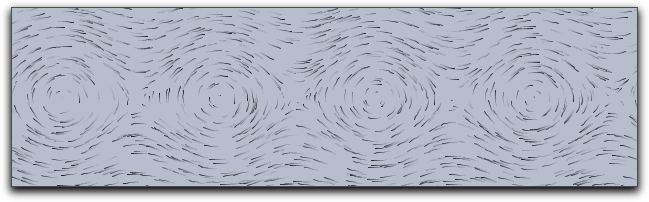 |
drawfield 演算子は、ベクトル場の生成プロセスを制御する多くの修飾子を備えています。それらの理解を助けるために、どのように図が描かれるかをもう少し詳しく説明します。| 修飾子: | 引数の型: | 効果 |
| テストオブジェクト: | ||
| resolution | <整数> | ピクセル単位での最初の格子の大きさ。 |
| jitter | <整数> | テストオブジェクトのゆがみ |
| needlesize | <実数> | 針の最大長 |
| factor | <実数> | 場の強さの拡大要素 |
| stream | <ブール値> | 針状か流体か |
| move | <実数> | オブジェクトを動かす速さ |
| 外観の表現: | ||
| color | [<実数1>,<実数2>,<実数3>] | 流体もしくは針の始めの方の色 |
| color2 | [<実数1>,<実数2>,<実数3>] | 針のあとの方の色 |
move->0 と jitter->0 を指定しました。垂直または水平方向から不自然な配置になっている生成物がわかります。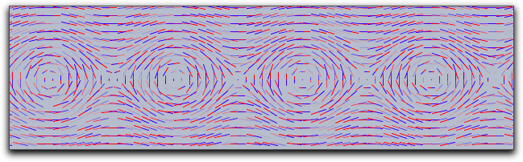 |
resolution->5 と stream->true で描写したものです。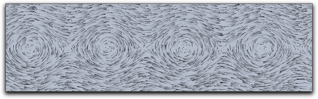 |
drawfieldcomplex(<expr>)drawfield とよく似ています。しかし、これは入力値を１次元の複素数とする関数です。 実部と虚部はベクトル場の x 成分と y 成分とみなされます。それ以外は、drawfield と同様です。f(x):=(x-complex(A))*(x-complex(B))*(x-complex(C))*(x-complex(D)); drawfieldcomplex(f(#),stream->true,resolution->5,color->(0,0,0))
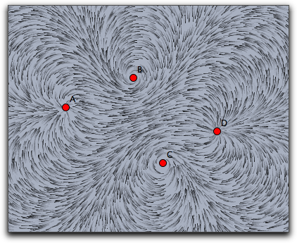 |
drawfield 演算子と同様です。drawforces()drawfield とよく似ています。しかし、今度は CindyLab における物理シミュレーションに関連しています。引数は必要でなく、画面のいろいろな地点にある潜在的な試験電荷による力を示します。試験電荷は、質量1，電荷1、半径1です。しかし、他のいかなる粒子もこれと相互作用は起こしません。ときどき、力の場を説明するのに、 factor 修飾子を使うことが必要になります。次の図は4つの荷電粒子間の相互作用を示します。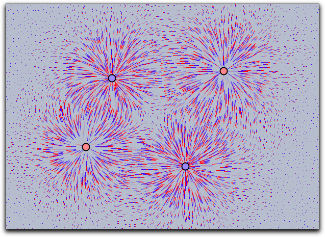 |
drawforces(<mass>)mapgrid(<expr>)<expr> による関数で変形します。初期状態ではもとのグリッドはその平面における単位正方形とみなされます。この長方形の境界は修飾子によって変更できます。また complex->true 修飾子によって、複素写像を視覚化できます。| 修飾子: | 引数の型: | 効果 |
| 表現: | ||
| color | [<実数1>,<実数2>,<実数3>] | 色を設定する |
| alpha | <実数> | 透明度を設定する |
| size | <実数> | グリッド線のサイズを指定する。 |
| 繰り返しの制御: | ||
| xrange | [<実数>,<実数>] | もとの長方形のxの範囲 |
| yrange | [<実数>,<実数>] | もとの長方形のyの範囲 |
| resolution | <整数> | 両方向のグリッド線の数 |
| resolutionx | <整数> | x-方向のグリッド線の数 |
| resolutiony | <整数> | y-方向のグリッド線の数 |
| step | <整数> | 両方向のステップ数 |
| stepx | <整数> | x-方向のステップ数 |
| stepy | <整数> | y-方向のステップ数 |
| 型: | ||
| complex | <ブール値> | 複素関数を使う |
mapgrid 関数の使い方の例です。修飾子 xrange と yrange による効果も示します。 x 座標と y 座標をそれぞれ２乗する２次元の関数による効果を示します。f(v):=(v_1^2,v_2^2); linesize(1.5); mapgrid(f(v),color->(0,0,0)); mapgrid(f(v),xrange->[1,2],color->(.6,0,0)); mapgrid(f(v),yrange->[1,2],color->(.6,0,0)); mapgrid(f(v),xrange->[1,2],yrange->[1,2],color->(0,.6,0));
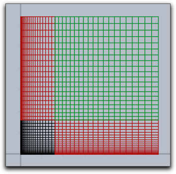 |
f(v):=(v_1*sin(v_2),v_2*sin(v_1)); linesize(1.5); mapgrid(f(v),xrange->[1,2],yrange->[1,2]);
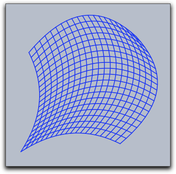 |
mapgrid の使い方の例です。mapgrid(z^2,complex->true);
resolution 修飾子によって生成される格子の密度を指定できます。mapgrid(z^2,complex->true,resolution->4);
mapgrid 関数では直接格子点をつなぎます。これは数学的に正しくない図を作るかもしれません。 step 修飾子で格子点の間に段階を追加します。mapgrid(z^2,complex->true,resolution->4,step->5);
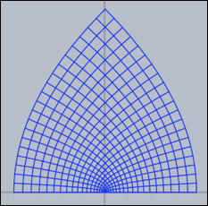
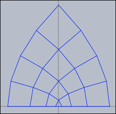
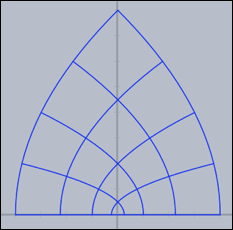
z*z, sin(z), 1/z と tan(z) の結果を示します。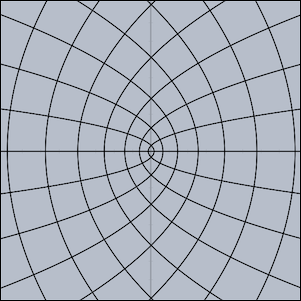 | 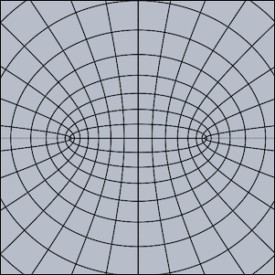 |
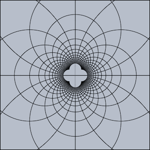 | 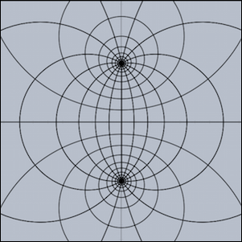 |
drawcurves(<vec>,<list>)drawcurves 演算子が作られました。ここで、<vec> は表示領域の左下の角を表す２次元ベクトルで、 <list> は観察する値のリストです。アニメーションが始まると値が更新され、対応する曲線が描かれます。drawcurves 演算子の簡単な使い方を示しています。 CindyLab で振り子を作っています。次のコードは、動く点の x 座標と x 方向の速度を曲線で表します。drawcurves([0,0],[D.x,D.vx])
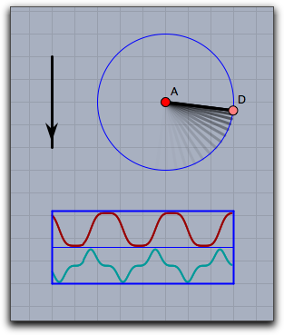 |
drawcurves 演算子はいくつかの修飾子を備えています。曲線の外観を変え、情報を付加するために使います。| 修飾子: | 引数の型: | 効果 |
| 次元: | ||
| width | <実数> | プロット範囲の幅(ピクセル) |
| height | <実数> | それぞれの曲線の高さ(ピクセル) |
| 外観: | ||
| border | <ブール値> | 表の枠を表示する |
| back | <ブール値> | 背景を表示する |
| back | [<実数1>,<実数2>,<実数3>] | 背景を指定した色で塗りつぶす |
| backalpha | <実数> | 背景の不透明度 |
| colors | [<色1>,<色2>,<色3>,...] | 曲線ごとに色を指定する |
| 情報: | ||
| texts | [<文字列1>,<文字列2>,<文字列3>,...] | 曲線ごとに表題を付ける |
| showrange | <ブール値> | 曲線の最大と最小を表示する |
| 描写: | ||
| range | <文字列> | "peek" 絶対値が最大のときの大きさ, "auto" 現在表示されている部分の大きさ |
| range | [<文字列1>,<文字列2>,<文字列3>,...] | それぞれの曲線の "peek"/"auto" |
linecolor((1,1,1));
textcolor((0,0.8,0));
drawcurves((-7,-3),
[A.x,B.x,A.ke,B.ke,a.pe+b.pe+c.pe],
height->50,
color->(1,1,1),
back->(0,0,0),
backalpha->1,
range->"peek",width->400,
colors->[
[1,0.5,0.5],
[0.5,1,0.5],
[1,0.5,0.5],
[0.5,1,0.5],
[0.5,0.5,1]],
texts->[
"PosA = "+ A.x,
"PosB = "+B.x,
"EnergyA = "+A.ke,
"EnergyB = "+B.ke,
"PotentialEnergy = "+(a.pe+b.pe+c.pe)
]
);
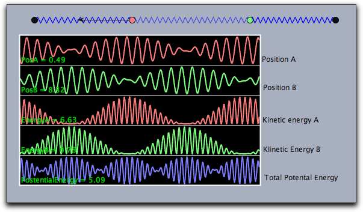 |
Page last modified on Tuesday 06 of March, 2012 [11:20:57 UTC].
The original document is available at
http://doc.cinderella.de/tiki-index.php?page=Function%20PlottingJ